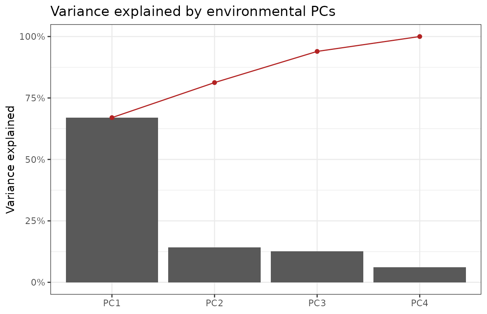
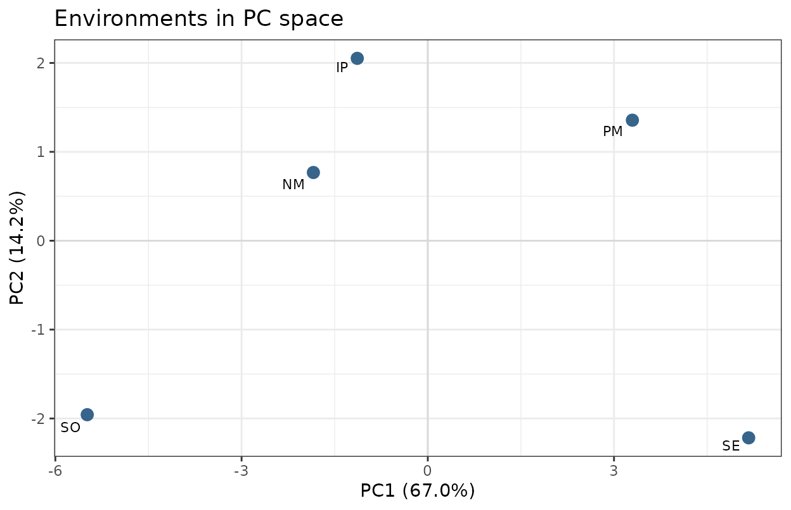
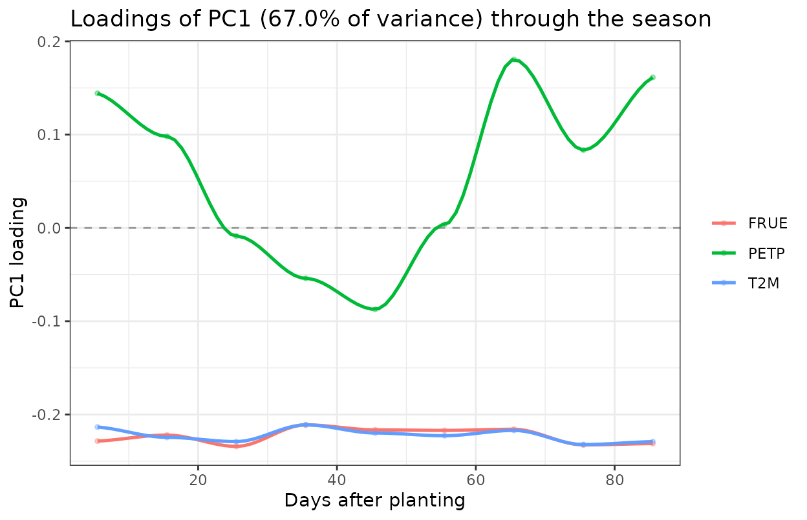
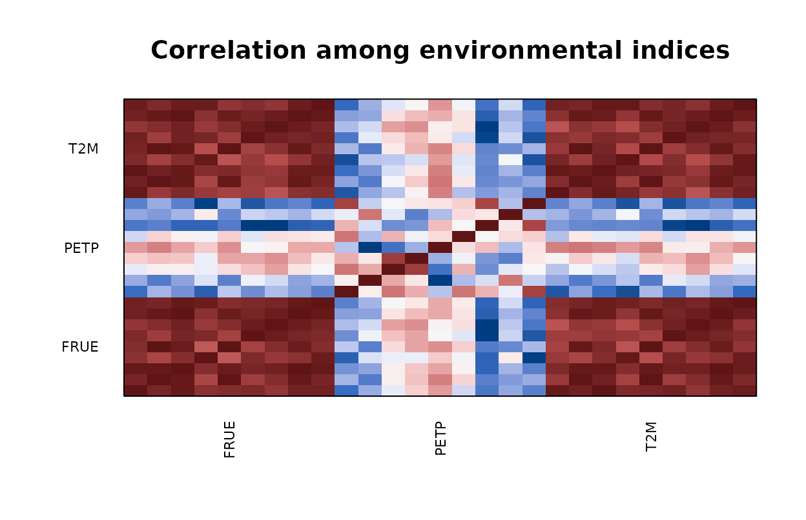

EnvRtype: Envirotyping for Quantitative Genetics and Plant Breeding
Created 12 August 2026 · Revised 05 October 2026
Source:vignettes/EnvRtype.Rmd
EnvRtype.RmdEnvRtype is an enviromics toolkit for genotype-by-environment (GxE) analysis and envirotype-informed genomic prediction. From geographic coordinates and date ranges it collects worldwide weather, soil, elevation, bioclimatic and CMIP6 climate-scenario data, derives agro-meteorological parameters and a FAO-56 soil water balance, maps daily weather onto crop developmental stages, and builds environmental covariable matrices, envirotype typologies, mega-environment clusters and relatedness kernels. It then fits Bayesian reaction-norm kernel models to predict trained genotypes at untested locations and planting dates, with coverage diagnostics, spatial mapping and planting-window optimisation. A simulation engine generates multi-environment trials and enviromes with known genetic architecture to validate every layer.
This vignette walks through the whole package, section by section, following the four data layers plus the simulation engine.
Why envirotyping
A breeder evaluating 500 hybrids across 30 locations observes that rankings change from site to site. Classical quantitative genetics treats this genotype-by-environment interaction as a variance component to be estimated and, usually, discarded:
The term absorbs everything specific to hybrid in location . It is estimable only where that combination was actually planted, so it cannot be transferred to a new site, a new season, or a new planting date. Every untested combination is a blank.
Envirotyping replaces the label with a description. Let be a vector of measured environmental quantities at site — mean temperature during flowering, accumulated water deficit during grain fill, radiation at emergence. The interaction then becomes a function of measurable covariates rather than an unstructured effect:
This is a reaction norm: genotype has its own slope against each environmental gradient . Because and the slopes are indexed by covariable, not by site, they carry to any location where can be computed — which, for weather and soil data, is anywhere on Earth.
That single substitution is what makes prediction into unplanted environments possible, and it is the organising idea behind every function in this package.
From covariables to kernels
Fitting separate slopes per genotype is infeasible when is in the hundreds and environments number in the tens. The standard remedy is to work with relatedness rather than with individual coefficients. Define the environmental kinship
for environments, exactly analogous to the genomic relationship matrix of VanRaden (2008). Two environments are “related” to the degree their covariable profiles align. The model becomes
with the GxE term given a Hadamard product . The number of parameters no longer grows with , and prediction at a new site requires only its row in — computable from downloaded weather without a single phenotype.
Why the growing season must be partitioned
A season-long mean is close to useless. Maize is largely indifferent
to heat during vegetative growth and acutely sensitive during the two
weeks around anthesis; averaging over 120 days dilutes the flowering
signal into noise. So every characterisation function in this package
accepts by.interval = TRUE with a time.window,
producing covariables indexed by factor × stage rather than by
factor alone.
The cost is dimensionality: 17 weather factors across 51 three-day
intervals gives 867 indices for 9 environments (Della Coletta et
al. 2023). Those indices are heavily collinear by construction, which is
what env_pca() exists to handle.
How the package is organised
| Layer | Purpose | Key functions |
|---|---|---|
| 1 · Acquire | Pull weather, soil and geodata |
get_weather(), get_soil(),
get_elevation()
|
| 2 · Process | Derive agro-meteorological parameters |
processWTH(), water_balance(),
env_phenology()
|
| 3 · Characterise | Build covariables, typologies, indices |
W_matrix(), env_typing(),
env_pca()
|
| 4 · Model & scan | Kernels, prediction, untested environments |
get_kernel(), kernel_model(),
scan_untested_envs()
|
| Simulate | Ground truth to validate every layer |
sim_met(), sim_W()
|
Layers 1 and 2 require network access, so those chunks are shown but not evaluated. Everything from layer 3 onward runs on the bundled HELIX maize data and executes in full.
data(maizeWTH)
data(maizeYield)
data(maizeG)
dim(maizeWTH)
#> [1] 756 30
dim(maizeYield)
#> [1] 750 3
dim(maizeG)
#> [1] 150 150maizeWTH holds daily weather for five Brazilian sites;
maizeYield holds grain yield for 150 hybrids in those five
environments; maizeG is the genomic relationship
matrix.
1 · Data acquisition
Weather comes from NASA POWER through nasapower; soil from SoilGrids 2.0; elevation and bioclimate from WorldClim 2; agro-ecological zones from GAEZ v4; future scenarios from CMIP6.
Daily weather
env <- c("NAIROBI", "NAKURU", "ELDORET")
lat <- c(-1.28, -0.30, 0.52)
lon <- c(36.82, 36.08, 35.27)
start <- rep("2020-03-01", 3)
end <- rep("2020-07-31", 3)
wth <- get_weather(env.id = env, lat = lat, lon = lon,
start.day = start, end.day = end)get_weather() accepts parallel = TRUE with
workers, chunks long date ranges via
chunk_size, and retries failed calls tries
times with sleep seconds between attempts.
Hourly weather, day/night partitioned
wth_h <- get_weather_hourly(env.id = env, lat = lat, lon = lon,
start.day = start, end.day = end)This is a separate function rather than an argument on
get_weather() because POWER caps hourly requests at 15
parameters, and T2M_MAX, T2M_MIN and
FROST_DAYS are daily aggregates that do not exist hourly.
It returns one row per environment-day with day, night and pre-dawn
partitions.
Note the limitation: POWER hourly is MERRA-2 reanalysis, not observation. The diurnal cycle is modelled.
Resumable downloads
Large multi-environment downloads fail partway through. The resumable variants checkpoint to disk:
wth <- get_weather_resumable(env.id = env, lat = lat, lon = lon,
start.day = start, end.day = end,
run.id = "kenya2020")
read_progress_log("kenya2020") # what succeeded, what failed
wth <- restart_from_log("kenya2020") # resume, retrying failuresget_soil_resumable() does the same for soil.
Soil, elevation, bioclimate and zones
soil <- get_soil(env.id = env, lat = lat, lon = lon)
elev <- get_elevation(env.id = env, lat = lat, lon = lon)
bioc <- get_bioclim(env.id = env, lat = lat, lon = lon, vars = 1:19)
aez <- get_AEZ(env.id = env, lat = lat, lon = lon)For future projections:
fut <- get_climate_scenario(env.id = env, lat = lat, lon = lon,
scenario = "ssp245")Raster extraction at trial coordinates uses
get_spatial().
2 · Processing
Agro-meteorological parameters
Raw POWER output gives temperature, radiation and precipitation. What
matters agronomically are derived quantities. processWTH()
computes all of them:
maizeWTH <- processWTH(env.data = maizeWTH, verbose = FALSE)
names(maizeWTH)
#> [1] "env" "LON" "LAT"
#> [4] "YEAR" "MM" "DD"
#> [7] "DOY" "YYYYMMDD" "T2M"
#> [10] "T2M_MAX" "T2M_MIN" "PRECTOT"
#> [13] "WS2M" "RH2M" "T2MDEW"
#> [16] "ALLSKY_SFC_LW_DWN" "ALLSKY_SFC_SW_DWN" "ALLSKY_TOA_SW_DWN"
#> [19] "daysFromStart" "SRAD" "n"
#> [22] "N" "RTA" "VPD"
#> [25] "SPV" "ETP" "PETP"
#> [28] "GDD" "FRUE" "T2M_RANGE"Three derived columns carry most of the signal:
| Column | Meaning |
|---|---|
GDD |
Growing degree days — thermal time |
FRUE |
Temperature effect on radiation use efficiency, in
[0, 1]
|
PETP |
Precipitation minus potential evapotranspiration; negative = deficit |
head(maizeWTH[, c("env", "daysFromStart", "GDD", "FRUE", "PETP")])
#> env daysFromStart GDD FRUE PETP
#> 1 NM 1 15.855 0.9326471 -8.602829
#> 2 NM 2 16.735 0.9844118 -5.695403
#> 3 NM 3 16.390 0.9641176 -3.869658
#> 4 NM 4 15.780 0.9282353 1.352827
#> 5 NM 5 14.480 0.8517647 11.364616
#> 6 NM 6 15.140 0.8905882 5.279136The three param_* functions run individually if you want
finer control:
d <- param_radiation(env.data = maizeWTH, merge = TRUE)
d <- param_atmospheric(env.data = d, Alt = 600)
d <- param_temperature(env.data = d, Tbase1 = 9, Tbase2 = 45,
Topt1 = 26, Topt2 = 32)Setting method = "legacy" in processWTH()
reproduces the 2021 behaviour.
Summarising by environment or stage
sm <- summaryWTH(env.data = maizeWTH, env.id = "env",
days.id = "daysFromStart",
var.id = c("T2M", "PRECTOT", "FRUE"),
verbose = FALSE)
head(sm)
#> env variable mean sum prob_0.25 prob_0.5 prob_0.75
#> 1 IP FRUE 0.8681976 142.3844 0.8120588 0.8698529 0.9383088
#> 2 IP PRECTOT 2.7785976 455.6900 0.0175000 0.3900000 3.2925000
#> 3 IP T2M 23.2651829 3815.4900 22.1375000 23.2550000 24.5950000
#> 4 NM FRUE 0.9471367 128.8106 0.9208088 0.9483824 0.9810294
#> 5 NM PRECTOT 2.8254412 384.2600 0.0100000 1.0100000 3.6775000
#> 6 NM T2M 24.7127941 3360.9400 24.2875000 24.7800000 25.1925000Split the season into developmental intervals:
stages <- c("VE", "V1_V6", "V6_VT", "VT_R1")
interval <- c(0, 7, 30, 65, 90)
sm_stage <- summaryWTH(env.data = maizeWTH, env.id = "env",
days.id = "daysFromStart",
var.id = c("FRUE", "PETP"),
by.interval = TRUE,
time.window = interval,
names.window = stages,
verbose = FALSE)
head(sm_stage)
#> env interval variable mean sum prob_0.25 prob_0.5
#> 1 IP Interval_90 FRUE 0.8146706 61.10029 0.7775000 0.8150000
#> 2 IP Interval_90 PETP -5.2008800 -374.46336 -6.3073859 -5.8348478
#> 3 IP V1_V6 FRUE 0.9354987 21.51647 0.9152941 0.9394118
#> 4 IP V1_V6 PETP -1.4631906 -33.65338 -7.1046784 -3.6571826
#> 5 IP V6_VT FRUE 0.9131092 31.95882 0.8805882 0.9252941
#> 6 IP V6_VT PETP -1.4355421 -50.24397 -5.5428601 -2.3442705
#> prob_0.75
#> 1 0.8520588
#> 2 -4.9447235
#> 3 0.9598529
#> 4 1.1608272
#> 5 0.9561765
#> 6 1.1272337A season-long mean hides stress concentrated around flowering. Stage resolution is almost always the more informative view.
Phenology
env_phenology() converts thermal time into developmental
stages:
show_phenology("maize") # inspect the bundled template
phenology_templates() # all available crops
ph <- env_phenology(env.data = maizeWTH, env.id = "env",
day.id = "daysFromStart",
crop = "maize", method = "gdd")Three thermal-time methods are available: "gdd"
(simple), "baskerville" (sine-wave correction for days
crossing the base temperature), and "trapezoid".
Photoperiod sensitivity is enabled with
photoperiod = TRUE.
FAO-56 water balance
Combining weather with soil hydraulic properties gives a daily root-zone water balance:
wb <- water_balance(env.data = maizeWTH, soil.data = soil,
env.id = "env", days.id = "daysFromStart",
PREC = "PRECTOT",
root.depth = 1000, root.init = 300,
dap.root.max = 60)
summary_water_balance(wb, by.interval = TRUE,
time.window = interval,
names.window = stages)Read the scope limits before drawing agronomic conclusions. This is the FAO-56 single coefficient method. It does not separate soil evaporation from transpiration, does not model runoff — all rainfall is assumed to infiltrate — and does not model capillary rise or lateral flow. On crusted or steep soils the no-runoff assumption overestimates stored water and therefore underestimates stress. The default Kc and p values describe a generic 120-day maize crop and are tabulated starting points, not calibrated values.
3 · Characterisation
The environmental covariable matrix
W has environments in rows and covariables in columns — the numeric representation every downstream model needs.
W <- W_matrix(env.data = maizeWTH,
var.id = c("FRUE", "PETP", "T2M_MAX", "T2M_MIN"),
statistic = "mean",
verbose = FALSE)
dim(W)
#> [1] 5 4
round(W[, 1:4], 2)
#> FRUE_mean PETP_mean T2M_MAX_mean T2M_MIN_mean
#> NM 0.73 -0.04 0.21 0.82
#> SO 1.11 -1.30 1.48 1.15
#> PM -0.61 -0.27 -0.52 -0.71
#> IP 0.13 0.11 0.05 -0.04
#> SE -1.36 1.49 -1.23 -1.22Stage-resolved, which separates flowering stress from vegetative stress:
W_stage <- W_matrix(env.data = maizeWTH,
var.id = c("FRUE", "PETP"),
by.interval = TRUE,
time.window = interval,
names.window = stages,
verbose = FALSE)
dim(W_stage)
#> [1] 5 10
colnames(W_stage)
#> [1] "FRUE_mean_VE" "FRUE_mean_V1_V6" "FRUE_mean_V6_VT"
#> [4] "FRUE_mean_VT_R1" "FRUE_mean_Interval_90" "PETP_mean_VE"
#> [7] "PETP_mean_V1_V6" "PETP_mean_V6_VT" "PETP_mean_VT_R1"
#> [10] "PETP_mean_Interval_90"Two covariables across four stages gives eight columns, each with its
own coefficient downstream. W_matrix() centres and scales
by default; QC = TRUE activates sd.tol
filtering; impute handles missing values.
Environmental typologies
A covariable says how much; an envirotype says what kind. Where crop physiology defines meaningful thresholds, discretising at those thresholds is more informative than a mean, because it preserves the shape of the exposure distribution rather than collapsing it.
For temperature, the cardinals are (base, below which development stops), and (the optimum band) and (critical/lethal). Counting the proportion of days falling in each band gives a frequency profile:
Two sites with identical mean temperature can have completely different profiles — one steady at the optimum, the other oscillating between cold nights and lethal afternoons. The mean cannot distinguish them; the typology can.
Supply cardinals when the crop physiology is known — maize temperature: base 0 °C, lower optimum 9 °C, upper optimum 32 °C, lethal 45 °C.
card_temp <- c( 9, 32, 45,Inf)
ET <- env_typing(env.data = maizeWTH, var.id = "T2M", env.id = "env",
cardinals = card_temp, verbose = FALSE)
head(ET)
#> env.variable Freq env interval var
#> 1 T2M_(22.8,23.2] 5 NM by environment T2M
#> 2 T2M_(23.2,23.6] 4 NM by environment T2M
#> 3 T2M_(23.6,23.9] 8 NM by environment T2M
#> 4 T2M_(23.9,24.3] 26 NM by environment T2M
#> 5 T2M_(24.3,24.7] 22 NM by environment T2M
#> 6 T2M_(24.7,25.1] 28 NM by environment T2MWithout cardinals, classes are cut at observed quantiles:
ET_rain <- env_typing(env.data = maizeWTH, var.id = "PRECTOT",
env.id = "env", verbose = FALSE)
head(ET_rain)
#> env.variable Freq env interval var
#> 1 PRECTOT_(0,0.28] 23 NM by environment PRECTOT
#> 2 PRECTOT_(0.28,2.88] 34 NM by environment PRECTOT
#> 3 PRECTOT_(2.88,23.8] 45 NM by environment PRECTOT
#> 4 PRECTOT_(0,0.28] 23 PM by environment PRECTOT
#> 5 PRECTOT_(0.28,2.88] 41 PM by environment PRECTOT
#> 6 PRECTOT_(2.88,23.8] 31 PM by environment PRECTOTData-driven envirotype mining is available via
envirotype_mining = TRUE, which selects the number of
classes by silhouette over k.range. Joint typologies across
variables use joint = TRUE.
The envirotype frequency matrix
T_matrix() returns environments by envirotype frequency
— rows are normalised compositions:
Tm <- T_matrix(env.data = maizeWTH, var.id = "T2M", env.id = "env",
cardinals = card_temp, verbose = FALSE)
dim(Tm)
#> [1] 5 45Because rows are already normalised, pass
is.scaled = TRUE when feeding a T_matrix to
env_kernel().
Clustering environments into mega-environments
A mega-environment is a repeatable group of locations that rank genotypes similarly. If such groups exist, a breeding programme can select within each rather than chasing a single genotype that wins everywhere — which usually does not exist.
env_cluster() approximates them by grouping environments
with similar enviromic profiles. The number of clusters is chosen by
maximising the average silhouette width
where is the mean distance from environment to others in its own cluster and the mean distance to the nearest other cluster. Values near 1 mean well-separated groups; values near 0 mean the boundary is arbitrary.
cl <- env_cluster(W = W, k.max = 4, seed = 1234, verbose = FALSE)
cl$k
#> [1] 2
cl$clusters
#> NM SO PM IP SE
#> 2 2 1 2 1Inspect the silhouette profile before trusting the chosen
k:
cl$silhouette
#> k avg.silhouette
#> 1 2 0.3135561
#> 2 3 0.2012617
#> 3 4 0.1054217If the best average width is below roughly 0.25, the data do not support discrete mega-environments and a continuous reaction-norm treatment is more honest than forcing groups.
The environment kinship implied by the clustering is returned too:
round(cl$env.kinship, 2)
#> NM SO PM IP SE
#> NM 1.00 0.67 -0.94 -0.43 -0.77
#> SO 0.67 1.00 -0.86 -0.42 -0.99
#> PM -0.94 -0.86 1.00 0.58 0.91
#> IP -0.43 -0.42 0.58 1.00 0.38
#> SE -0.77 -0.99 0.91 0.38 1.00Forcing a fixed number of groups:
cl2 <- env_cluster(W = W, k = 2, seed = 1234, verbose = FALSE)
table(cl2$clusters)
#>
#> 1 2
#> 3 2Five environments is a small illustration; the method is intended for TPE surveys with tens to hundreds of sites.
Which environmental factors drive a grouping
env_cluster() is unsupervised — it groups by enviromic
profile alone. env_target_importance() is its supervised
counterpart: environments are grouped by what the breeder cares
about (yield level, heritability, selection accuracy), and the
enviromic data are then asked to explain that grouping via a Random
Forest.
The target Y is an environment-level quantity — one
value per environment, not the raw plot data:
Y_env <- tapply(maizeYield$value, maizeYield$env, mean)
Y_env <- Y_env[rownames(W)]
round(Y_env, 3)
#> NM SO PM IP SE
#> -0.556 0.919 0.838 -1.079 0.165
if (requireNamespace("randomForest", quietly = TRUE)) {
imp <- env_target_importance(Y = Y_env, W = W, k = 2, ntree = 200,
seed = 1234, verbose = FALSE)
print(imp$k)
print(imp$clusters)
head(imp$importance)
}
#> [1] 2
#> NM SO PM IP SE
#> 1 2 2 1 2
#> variable importance
#> 1 PETP_mean 0.5965
#> 2 T2M_MAX_mean 0.5225
#> 3 T2M_MIN_mean 0.4955
#> 4 FRUE_mean 0.4695Variables at the top of $importance are candidate
drivers of the observed stratification — the environmental factors worth
measuring in future trials, or worth targeting with stress-tolerance
breeding.
A multi-trait target works too. Here environments are grouped by both mean yield and within-environment variability:
if (requireNamespace("randomForest", quietly = TRUE)) {
Ymat <- cbind(
mean = Y_env,
sd = tapply(maizeYield$value, maizeYield$env, stats::sd)[rownames(W)]
)
imp2 <- env_target_importance(Y = Ymat, W = W, k = 2, ntree = 200,
seed = 1234, verbose = FALSE)
head(imp2$importance)
}
#> variable importance
#> 1 PETP_mean 0.6498333
#> 2 T2M_MAX_mean 0.5183333
#> 3 T2M_MIN_mean 0.4910000
#> 4 FRUE_mean 0.4488333Use importance.type = "permutation" when covariables
differ in scale or cardinality — MeanDecreaseGini is biased towards
high-cardinality predictors.
Multi-year risk profiles and TPE weights
With several years of weather for the same sites,
env_risk_profile() gives envirotype frequencies per stage
across seasons:
risk <- env_risk_profile(env.data = long_term_wth,
site.id = "env", date.id = "YYYYMMDD",
var.id = c("T2M", "PETP"),
season.length = 150,
crop = "maize", by.stage = TRUE)
tpe_weights(risk, stage = "flowering")Projecting that baseline onto a future scenario:
project_risk(baseline = risk, scenario = fut)Copula-based indices
env_copula() reparameterises W onto
copula scales, separating the marginal behaviour of each covariable from
their dependence structure:
cop <- env_copula(W = W, index = "pobs")
#> ---------------------------------------------------------------
#> env_copula -- reparameterises covariables into copula indices
#> Last updated at 09/27/2026
#> ---------------------------------------------------------------
#> Warning: Only 5 environments: copula indices are rank statistics across
#> environments and will be very coarse. Interpret with care.
#> env_copula: 5 environments, 4 covariables, 1 block(s); index = 'pobs'.
dim(cop)
#> [1] 5 4Options are "pobs", "joint",
"survival", "kendall" and
"all".
Interval-resolved dissection and PCA
Following Della Coletta et al. (2023), env_indices()
builds an environment × (factor × interval) matrix — the paper used
3-day intervals to 151 DAP, giving 51 intervals × 17 factors = 867
indices.
idx <- env_indices(env.data = maizeWTH, env.id = "env",
day.id = "daysFromStart",
var.id = c("FRUE", "PETP", "T2M"),
interval = 10L, end.day = 90L,
statistic = "mean", verbose = FALSE)
dim(idx)
#> [1] 5 27These indices are heavily correlated by construction, which is what PCA is for:
pca <- env_pca(W = idx, scale. = TRUE, verbose = FALSE)
head(pca$variance)
#> PC sd prop cum
#> 1 PC1 4.253636 0.67012674 0.6701267
#> 2 PC2 1.961418 0.14248742 0.8126142
#> 3 PC3 1.850674 0.12685159 0.9394657
#> 4 PC4 1.278446 0.06053425 1.0000000The result carries $scores (environment × PC),
$loadings (index × PC), $variance
(PC, sd, prop, cum),
the underlying $prcomp object, $dropped
(constant indices removed before scaling) and $meta, which
maps each index back to its factor, interval and day:
head(pca$meta)
#> index factor interval day
#> 1 FRUE_i001 FRUE i001 5.5
#> 2 FRUE_i002 FRUE i002 15.5
#> 3 FRUE_i003 FRUE i003 25.5
#> 4 FRUE_i004 FRUE i004 35.5
#> 5 FRUE_i005 FRUE i005 45.5
#> 6 FRUE_i006 FRUE i006 55.5
dim(pca$scores)
#> [1] 5 4
dim(pca$loadings)
#> [1] 27 4env_pca() defaults to scale. = TRUE
deliberately. The factors sit on wildly different scales — radiation in
MJ/m²/day, precipitation in mm, unitless FRUE in [0,1] — so an unscaled
PCA is dominated by whichever has the largest variance. Set
scale. = FALSE for a covariance-matrix PCA. Zero-variance
indices are dropped before scaling rather than silently producing
NaN.
How many PCs to keep is a judgement, not a fixed number:
env_pca_scree(pca, verbose = FALSE)
env_pca_biplot(pca, pc = c(1, 2), verbose = FALSE)
Loadings through the season show which factor at which growth stage drives a component:
env_loading_curve(pca, pc = 1, span = 0.4, verbose = FALSE)
#> Warning in simpleLoess(y, x, w, span, degree = degree, parametric = parametric,
#> : span too small. fewer data values than degrees of freedom.
#> Warning in simpleLoess(y, x, w, span, degree = degree, parametric = parametric,
#> : pseudoinverse used at 5.1
#> Warning in simpleLoess(y, x, w, span, degree = degree, parametric = parametric,
#> : neighborhood radius 20.4
#> Warning in simpleLoess(y, x, w, span, degree = degree, parametric = parametric,
#> : reciprocal condition number 0
#> Warning in simpleLoess(y, x, w, span, degree = degree, parametric = parametric,
#> : There are other near singularities as well. 416.16
#> Warning in simpleLoess(y, x, w, span, degree = degree, parametric = parametric,
#> : span too small. fewer data values than degrees of freedom.
#> Warning in simpleLoess(y, x, w, span, degree = degree, parametric = parametric,
#> : pseudoinverse used at 5.1
#> Warning in simpleLoess(y, x, w, span, degree = degree, parametric = parametric,
#> : neighborhood radius 20.4
#> Warning in simpleLoess(y, x, w, span, degree = degree, parametric = parametric,
#> : reciprocal condition number 0
#> Warning in simpleLoess(y, x, w, span, degree = degree, parametric = parametric,
#> : There are other near singularities as well. 416.16
#> Warning in simpleLoess(y, x, w, span, degree = degree, parametric = parametric,
#> : span too small. fewer data values than degrees of freedom.
#> Warning in simpleLoess(y, x, w, span, degree = degree, parametric = parametric,
#> : pseudoinverse used at 5.1
#> Warning in simpleLoess(y, x, w, span, degree = degree, parametric = parametric,
#> : neighborhood radius 20.4
#> Warning in simpleLoess(y, x, w, span, degree = degree, parametric = parametric,
#> : reciprocal condition number 0
#> Warning in simpleLoess(y, x, w, span, degree = degree, parametric = parametric,
#> : There are other near singularities as well. 416.16
Correlation structure among indices:
env_cor_heatmap(idx, order = "factor", verbose = FALSE)
#> Mean |r| among indices: 0.609 (high values justify the PCA)
Relating PCs to an external per-environment variable — mean yield, for instance:
env_mean <- tapply(maizeYield$value, maizeYield$env, mean)
env_mean <- env_mean[rownames(pca$scores)]
env_pc_associate(pca, y = env_mean, method = "pearson",
p.adjust = "BH", verbose = FALSE)
#> column PC r p p.adj n
#> 1 y1 PC3 -0.83607964 0.07767937 0.3107175 5
#> 2 y1 PC2 -0.53714075 0.35057276 0.7011455 5
#> 3 y1 PC4 0.09667016 0.87710771 0.9290825 5
#> 4 y1 PC1 0.05572730 0.92908254 0.9290825 5A PC that correlates with mean yield identifies an environmental
gradient the crop is actually responding to. Combined with
env_loading_curve(), which shows which factor at which
stage loads on that PC, this is how a vague observation like “site
3 underperformed” becomes “site 3 accumulated water deficit during grain
fill”.
Benjamini–Hochberg adjustment is applied by default because one test is run per retained PC.
Soil zoning by Gaussian mixture
zones <- soil_classification(soil.data = soil)The method follows the standard GMM zoning pipeline with BIC model selection. Texture fractions are compositional, so a log-ratio transform is applied before clustering. Read the documentation note: this is not a byte-for-byte reproduction of Zhang et al. (2025), and SoilGrids carries no heavy metals, so the cadmium application in that paper cannot be reproduced here.
4 · Prediction
Environmental relatedness kernels
Two environments with similar conditions should rank genotypes similarly. A kernel turns that intuition into a covariance matrix.
Linear (GB). The environmental analogue of VanRaden’s genomic relationship matrix:
The trace normalisation puts the kernel on a scale comparable to , so variance components from the two sources can be read against each other.
Gaussian (GK). Similarity decays nonlinearly with distance:
where is the median squared Euclidean distance, making the bandwidth scale-free. Use this when a doubling of stress does more than double the penalty — common for heat and drought, where damage is threshold-like.
Arc-cosine deep (DK). Emulates an infinitely wide
neural network with deep.layers hidden layers (Cuevas et
al. 2019), recursively:
No bandwidth to tune, at the cost of interpretability.
K_lin <- env_kernel(env.data = W, gaussian = FALSE, verbose = FALSE)
round(K_lin$envCov, 2)
#> NM SO PM IP SE
#> NM 0.39 0.66 -0.35 0.02 -0.72
#> SO 0.66 2.00 -0.60 0.01 -2.08
#> PM -0.35 -0.60 0.38 -0.03 0.60
#> IP 0.02 0.01 -0.03 0.01 -0.01
#> SE -0.72 -2.08 0.60 -0.01 2.21
K_lin <- env_kernel(env.data = W, gaussian = FALSE, verbose = FALSE)
round(K_lin$envCov, 2)
#> NM SO PM IP SE
#> NM 0.39 0.66 -0.35 0.02 -0.72
#> SO 0.66 2.00 -0.60 0.01 -2.08
#> PM -0.35 -0.60 0.38 -0.03 0.60
#> IP 0.02 0.01 -0.03 0.01 -0.01
#> SE -0.72 -2.08 0.60 -0.01 2.21The return value has two parts. envCov is environment ×
environment — the one that goes into the model. varCov is
covariable × covariable, a diagnostic showing which covariables move
together.
K_gau <- env_kernel(env.data = W, gaussian = TRUE, verbose = FALSE)
round(K_gau$envCov, 2)
#> NM SO PM IP SE
#> NM 1.00 0.46 0.34 0.77 0.05
#> SO 0.46 1.00 0.08 0.24 0.00
#> PM 0.34 0.08 1.00 0.72 0.37
#> IP 0.77 0.24 0.72 1.00 0.20
#> SE 0.05 0.00 0.37 0.20 1.00Arc-cosine deep kernels emulate a deep network without a bandwidth parameter:
K_deep <- env_kernel(env.data = W, deep.kernel = TRUE, deep.layers = 2,
verbose = FALSE)
round(K_deep$envCov, 2)
#> NM SO PM IP SE
#> NM 1.26 2.32 0.40 0.12 1.00
#> SO 2.32 6.42 0.97 0.24 2.15
#> PM 0.40 0.97 1.22 0.07 2.24
#> IP 0.12 0.24 0.07 0.03 0.23
#> SE 1.00 2.15 2.24 0.23 7.07One kernel per developmental stage:
K_stage <- env_kernel(env.data = W_stage, stages = stages,
gaussian = TRUE, verbose = FALSE)
names(K_stage$envCov)
#> [1] "VE" "V1_V6" "V6_VT" "VT_R1"Which kernel performs best is empirical. Compare by cross-validation, not by inspection.
Assembling the model
get_kernel() combines genomic (K_G),
environmental (K_E) and soil (K_S) kernels
into the structure kernel_model() expects:
K <- get_kernel(K_G = list(G = maizeG),
K_E = list(W = K_gau$envCov),
data = maizeYield,
model = "RNMM",
env = "env", gid = "gid")
names(K)
#> [1] "KE_W" "KG_G" "KGE_GW"Four structures are available:
model |
Structure | Random terms |
|---|---|---|
MM |
Main effects, genomic only | |
MDs |
Main effects plus GxE deviation | , |
RNMM |
Reaction-norm main effects | , |
RNMDs |
Reaction norm plus GxE deviation | , , |
The distinction that matters: MDs models GxE as an
unstructured deviation — estimable only where planted.
RNMM and RNMDs route it through
,
which is computable anywhere. Only the latter two can predict into
unplanted environments.
RNMM is the usual choice for enviromic prediction —
environmental relatedness enters directly, which is what makes
prediction into unplanted environments possible.
Fitting
fit <- kernel_model(y = "value", data = maizeYield, random = K,
env = "env", gid = "gid",
iterations = 1000, burnin = 200, thining = 10,
keep_effects = TRUE)
varcomp_summary(fit)MCMC fitting via BGGE is too slow for a vignette build, so these chunks are not evaluated.
keep_effects = TRUE matters more than its name suggests:
it retains per-draw effect chains rather than posterior means. Any
downstream scan needs those chains, or its credible intervals would be
fabricated.
For large kernels, eigendecomposition up front speeds up fitting:
Kd <- decompose_kernels(K, keep_var = 0.99)
fit <- kernel_model(y = "value", data = maizeYield, random = Kd,
env = "env", gid = "gid", keep_effects = TRUE)truncate_gxe_kernel(random, keep_prop = 0.75) trims the
GxE block; undecompose_kernels() reverses the
decomposition.
Cross-validation
cv <- kernel_cv(y = "value", data = maizeYield, random = K,
env = "env", gid = "gid",
folds = 5, scheme = "cv1", seed = 1234)cv1 predicts untested genotypes; cv0
predicts untested environments.
Multiple chains and clustered models
fit_mc <- kernel_model_mc(y = "value", data = maizeYield, random = K,
env = "env", gid = "gid", n_chains = 3, seed = 1)
cl2 <- cluster_environments(K_gau$envCov, k = 2, method = "hclust")
fit_cl <- kernel_model_clustered(y = "value", data = maizeYield, random = K,
env = "env", gid = "gid",
clusters = cl2, use = "block")Predicting untested environments
The payoff. Given a fitted model and a covariable vector for a site that was never planted, the predicted environmental effect is the Gaussian-process conditional mean
where holds the kernel evaluations between the new site and each training environment. This is kriging in covariable space rather than in geographic space — two sites 2000 km apart can be neighbours if their climates match.
The caveat that matters most. The formula returns a
number for any
,
including one far outside anything observed. The arithmetic is valid;
the prediction is not. scan_untested_envs() therefore
reports where each new site sits relative to the training envelope, via
the Mahalanobis ratio
Values above 1 mean the site is further from the training centroid than any training environment was. Treat those predictions as hypotheses, not forecasts.
sc <- scan_untested_envs(object = fit,
W_train = W, W_new = W_new,
K_G = maizeG,
level = 0.95,
envelope = "flag")
coverage_summary(sc)envelope controls extrapolation handling —
"keep", "flag", "mask" or
"drop". A new environment far outside the training envelope
produces a prediction that is arithmetically valid and scientifically
worthless; coverage_summary() tells you which sites those
are.
Mapping and tabulating:
map_scan(sc, coords, type = "coverage")
map_scan(sc, coords, type = "performance", genotypes = "G01")
map_scan(sc, coords, type = "which_won_where")
scan_spatial_table(sc, coords, lon_col = "lon", lat_col = "lat")For large grids, grid_scan() chunks the computation to
bound memory:
gs <- grid_scan(fit, W_train = W, W_new = W_grid, K_G = maizeG,
chunk_size = 500)Planting dates
The same machinery answers when rather than where:
planting_window_table(sc, dates = sowing_dates)
plot_planting_window(sc, dates = sowing_dates, summarise = "genotype")
best_planting_date(sc, dates = sowing_dates, exclude_flagged = TRUE)Combining both — one map panel per candidate date:
map_scan(sc, coords, date_col = "date", facet_by = "date",
genotypes = "G01")5 · Simulation
Every layer above can be validated against known truth.
sim_met() generates a multi-environment trial from a
specified genomic kinship and environmental correlation structure.
C_env <- sim_met_C(q = 6, min.cor = 0.1, max.cor = 0.8, seed = 42)
round(C_env, 2)
#> E1 E2 E3 E4 E5 E6
#> E1 1.00 0.77 0.62 0.61 0.48 0.10
#> E2 0.77 1.00 0.53 0.69 0.63 0.42
#> E3 0.62 0.53 1.00 0.48 0.48 0.10
#> E4 0.61 0.69 0.48 1.00 0.35 0.53
#> E5 0.48 0.63 0.48 0.35 1.00 0.68
#> E6 0.10 0.42 0.10 0.53 0.68 1.00
#> attr(,"tries")
#> [1] 8
#> attr(,"repaired")
#> [1] FALSE
#> attr(,"requested")
#> min.cor max.cor
#> 0.1 0.8
#> attr(,"class")
#> [1] "C_env" "matrix" "array"
set.seed(42)
sim <- sim_met(K = maizeG, C = C_env, min.h2 = 0.3, max.h2 = 0.7,
n_rep = 2, seed = 42)
#> <sim_met>
#> lines x environments ... 150 x 6 (K is 150 x 150, C_env is 6 x 6)
#> observations ........... 1800 (n_rep = 2)
#> h2 target .............. 0.414 - 0.675
#> h2 realised (plot) ..... 0.341 - 0.683 max err 0.099
#> h2 realised (line-mean). 0.508 - 0.812
#> gcor target ............ 0.101 - 0.774
#> gcor realised (whitened) 0.096 - 0.774 max err 0.00488
#> exact .................. TRUE
str(sim$data)
#> 'data.frame': 1800 obs. of 4 variables:
#> $ env : Factor w/ 6 levels "E1","E2","E3",..: 1 1 1 1 1 1 1 1 1 1 ...
#> $ gid : Factor w/ 150 levels "G001","G002",..: 1 2 3 4 5 6 7 8 9 10 ...
#> $ rep : int 1 1 1 1 1 1 1 1 1 1 ...
#> $ value: num 0.302 2.147 -1.492 1.669 -0.409 ...The simulator returns $data (the phenotypes),
$C_env (the environmental correlation used) and
$truth (the generating parameters).
sim_W() then produces a covariable matrix explaining a
known proportion of that environmental correlation:
W_sim <- sim_W(C_env = sim$C_env, noise = 0.3, n_var = 30,
collinearity = 0.5, seed = 42, verbose = FALSE)
dim(W_sim)
#> [1] 6 30Because the truth is known, the full pipeline can be run on
W_sim and the recovered variance components compared
against sim$truth. That is the validation loop:
K_sim <- env_kernel(env.data = W_sim, verbose = FALSE)
Ks <- get_kernel(K_G = list(G = maizeG),
K_E = list(W = K_sim$envCov),
data = sim$data, model = "RNMM",
env = "env", gid = "gid")
fit_s <- kernel_model(y = "value", data = sim$data, random = Ks,
env = "env", gid = "gid")
varcomp_summary(fit_s) # compare against sim$truthTo explore how noise, dimensionality and collinearity affect recovery, sweep a grid:
sim_W_grid(C_env = sim$C_env,
noise = seq(0, 1, 0.25),
n_var = c(10, 50, 200),
collinearity = c(0, 0.5, 0.9),
n_rep = 10, seed = 42)Citation
citation("EnvRtype")Costa-Neto, G., Galli, G., Carvalho, H. F., Crossa, J., & Fritsche-Neto, R. (2021). EnvRtype: a software to interplay enviromics and quantitative genomics in agriculture. G3: Genes|Genomes|Genetics, 11(4), jkab040.
Key references
Enviromics and prediction — Costa-Neto et al. (2021, G3 11:jkab040); Costa-Neto, Fritsche-Neto & Crossa (2021, Heredity 126:92–106); Costa-Neto et al. (2023, G3 13:jkac313); Cuevas et al. (2019, G3 9:2913–2924); Granato et al. (2018, G3 8:3039–3047).
Characterisation — Costa-Neto et al. (2023, Agronomy Journal 115(5)); Della Coletta et al. (2023, GENETICS 224:iyad103).
Copulas — Sklar (1959); Genest & Rivest (1993); Salvadori et al. (2007).
Data sources — Sparks (2018, JOSS 3:1035); Poggio et al. (2021, SOIL 7:217–240); Fick & Hijmans (2017, IJC 37:4302–4315); O’Neill et al. (2016, GMD 9:3461–3482); FAO & IIASA (2021, GAEZ v4).
Water balance and phenology — Allen et al. (1998, FAO-56); Pereira et al. (2021, AWM 243:106466); Doorenbos & Kassam (1979, FAO-33); Zadoks et al. (1974, Weed Research 14:415–421).
Soil zoning — Fraley & Raftery (2002, JASA 97:611–631); Scrucca et al. (2016, R Journal 8:205–233); Egozcue et al. (2003, Math. Geol. 35:279–300).